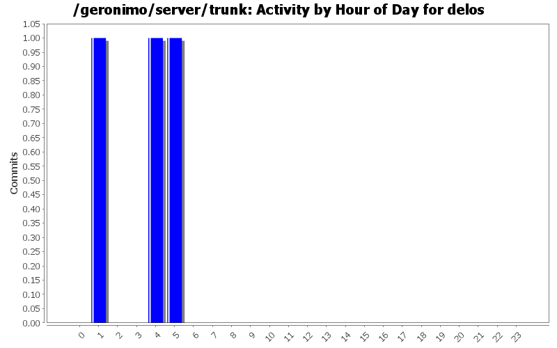
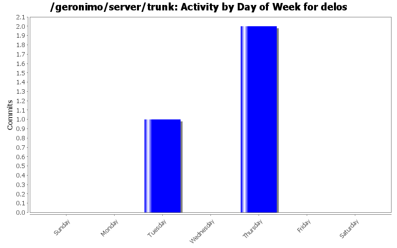
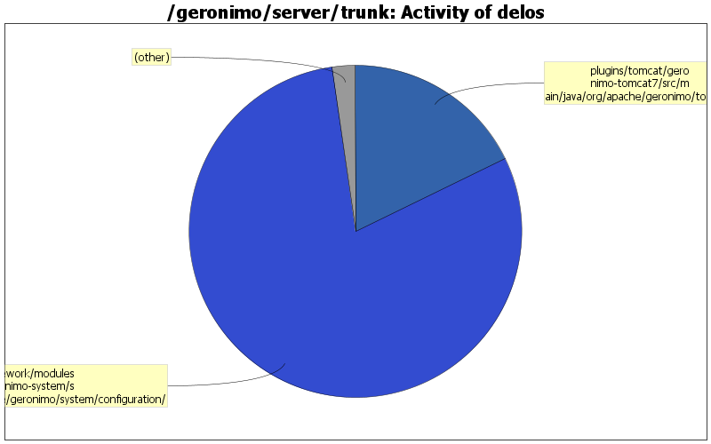

| Directory | Changes | Lines of Code | Lines per Change |
|---|---|---|---|
| Totals | 3 (100.0%) | 45 (100.0%) | 15.0 |
| framework/modules/geronimo-system/src/main/java/org/apache/geronimo/system/configuration/ | 1 (33.3%) | 36 (80.0%) | 36.0 |
| plugins/tomcat/geronimo-tomcat7/src/main/java/org/apache/geronimo/tomcat/ | 1 (33.3%) | 8 (17.8%) | 8.0 |
| plugins/console/console-base-portlets/src/main/java/org/apache/geronimo/console/webmanager/ | 1 (33.3%) | 1 (2.2%) | 1.0 |

GERONIMO-5568 it's problem of exporting plugin. Now, all deployed artifact has been in format of car package, so update original code to read from a package instead of a directory
36 lines of code changed in 1 file:
GERONIMO-5608 update connector attribute list
8 lines of code changed in 1 file:
GERONIMO-5544 query Connector gbean by abstract name to sucessfully save updating of connector attributes
1 lines of code changed in 1 file: